QC and downstream analysis for differential expression RNA-seq
Lorena Pantano
26 February 2018
Abstract
DEGreport package version: 1.15.3
Lorena Pantano Harvard TH Chan School of Public Health, Boston, US
library(DEGreport)
data(humanGender)General QC figures from DE analysis
We are going to do a differential expression analysis with edgeR/DESeq2. We have an object that is coming from the edgeR package. It contains a gene count matrix for 85 TSI HapMap individuals, and the gender information. With that, we are going to apply the glmFit function or DESeq2 to get genes differentially expressed between males and females.
library(DESeq2)
idx <- c(1:10, 75:85)
dds <- DESeqDataSetFromMatrix(assays(humanGender)[[1]][1:1000, idx],
colData(humanGender)[idx,], design=~group)
dds <- DESeq(dds)
res <- results(dds)We need to extract the experiment design data.frame where the condition is Male or Female.
counts <- counts(dds, normalized = TRUE)
design <- as.data.frame(colData(dds))Size factor QC
A main assumption in library size factor calculation of edgeR and DESeq2 (and others) is that the majority of genes remain unchanged. Plotting the distribution of gene ratios between each gene and the average gene can show how true this is. Not super useful for many samples because the plot becomes crowed.
degCheckFactors(counts[, 1:6])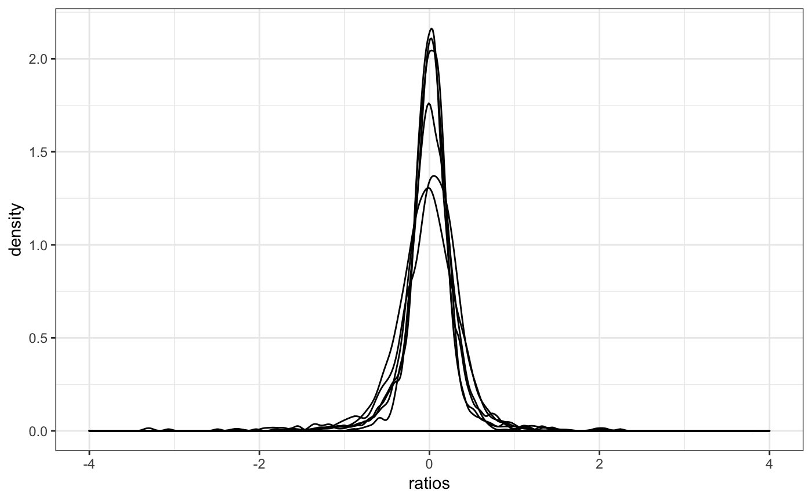
Mean-Variance QC plots
p-value distribution gives an idea on how well you model is capturing the input data and as well whether it could be some problem for some set of genes. In general, you expect to have a flat distribution with peaks at 0 and 1. In this case, we add the mean count information to check if any set of genes are enriched in any specific p-value range.
Variation (dispersion) and average expression relationship shouldn’t be a factor among the differentially expressed genes. When plotting average mean and standard deviation, significant genes should be randomly distributed.
In this case, it would be good to look at the ones that are totally outside the expected correlation.
You can put this tree plots together using degQC.
degQC(counts, design[["group"]], pvalue = res[["pvalue"]])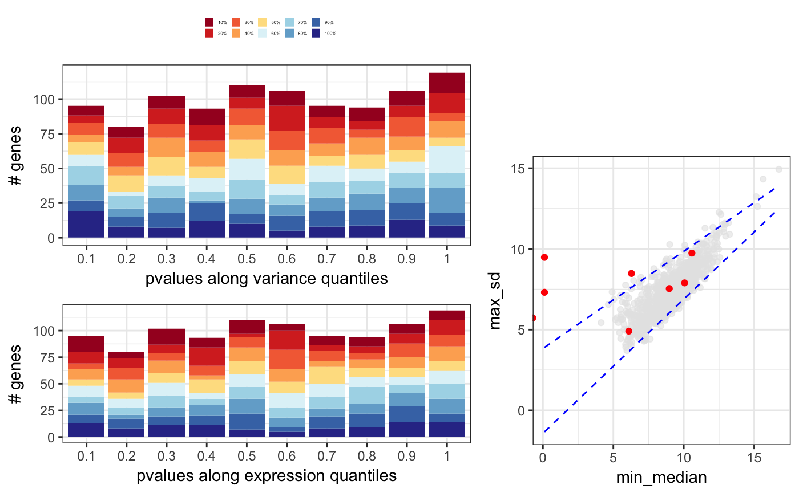
Covariates effect on count data
Another important analysis to do if you have covariates is to calculate the correlation between PCs from PCA analysis to different variables you may think are affecting the gene expression. This is a toy example of how the function works with raw data, where clearly library size correlates with some of the PCs.
resCov <- degCovariates(log2(counts(dds)+0.5),
colData(dds))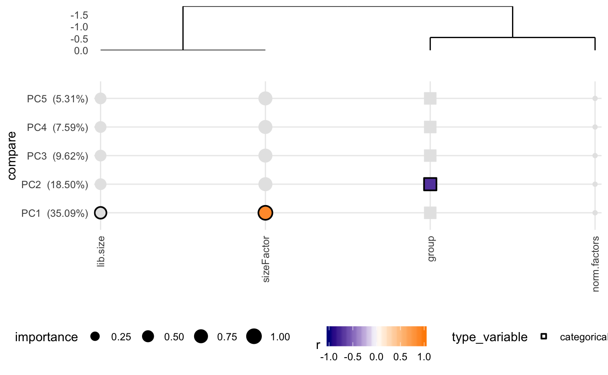
Covariates correlation with metrics
Also, the correlation among covariates and metrics from the analysis can be tested. This is useful when the study has multiple variables, like in clinical trials. The following code will return a correlation table, and plot the correlation heatmap for all the covariates and metrics in a table.
cor <- degCorCov(colData(dds))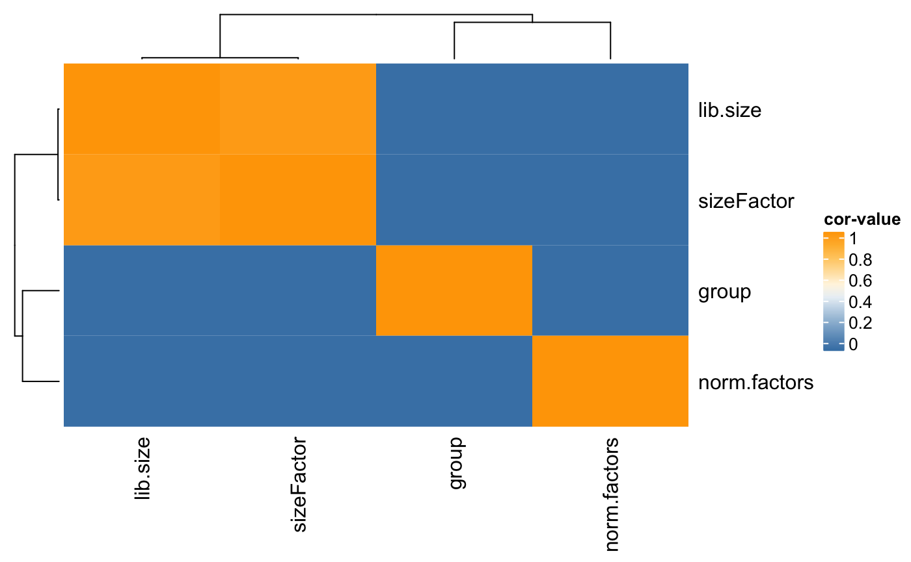
names(cor)## [1] "cor" "corMat" "fdrMat" "plot"QC report
A quick HTML report can be created with createReport to show whether a DE analysis is biased to a particular set of genes. It contains the output of degQC,degVB and degMB.
createReport(colData(dds)[["group"]], counts(dds, normalized = TRUE),
row.names(res)[1:20], res[["pvalue"]], path = "~/Downloads")Report from DESeq2 analysis
Here, we show some useful plots for differentially expressed genes.
Contrasts
DEGSet is a class to store the DE results like the one from results function. DESeq2 offers multiple way to ask for contrasts/coefficients. With degComps is easy to get multiple results in a single object:
degs <- degComps(dds, combs = "group",
contrast = list("group_Male_vs_Female",
c("group", "Female", "Male")))
names(degs)## [1] "group_Male_vs_Female" "group_Female_vs_Male"degs contains 3 elements, one for each contrast/coefficient asked for. It contains the results output in the element raw and the output of lfcShrink in the element shrunken. To obtain the results from one of them, use the method dge:
deg(degs[[1]])## log2 fold change (MAP): group Male vs Female
## Wald test p-value: group Male vs Female
## DataFrame with 1000 rows and 6 columns
## baseMean log2FoldChange lfcSE stat
## <numeric> <numeric> <numeric> <numeric>
## ENSG00000067048 1025.03783 1.9394875 0.10069402 23.994380
## ENSG00000012817 411.54387 3.7005640 0.09898885 21.804517
## ENSG00000067646 169.81477 3.3228457 0.09951933 15.483847
## ENSG00000005889 670.86191 -0.4894347 0.09293631 -5.263708
## ENSG00000006757 92.66111 -0.4729262 0.09927492 -4.757006
## ... ... ... ... ...
## ENSG00000068120 1214.0967 -0.0001143219 0.07972266 -0.001433998
## ENSG00000072062 935.3172 0.0005592191 0.09153522 0.006108720
## ENSG00000076770 1019.7964 0.0008500818 0.10166633 0.008361930
## ENSG00000078967 166.4221 0.0004157454 0.09597580 0.004329710
## ENSG00000079246 5226.3390 0.0001495843 0.09262051 0.001614995
## pvalue padj
## <numeric> <numeric>
## ENSG00000067048 3.183020e-127 3.183020e-124
## ENSG00000012817 2.102139e-105 1.051070e-102
## ENSG00000067646 4.459844e-54 1.486615e-51
## ENSG00000005889 1.411785e-07 3.529463e-05
## ENSG00000006757 1.964856e-06 3.929713e-04
## ... ... ...
## ENSG00000068120 0.9988558 0.9988558
## ENSG00000072062 0.9951260 0.9988558
## ENSG00000076770 0.9933282 0.9988558
## ENSG00000078967 0.9965454 0.9988558
## ENSG00000079246 0.9987114 0.9988558By default it would output the shrunken table always, as defined by degDefault, that contains the default table to get.
To get the original results table, use the parameter as this:
deg(degs[[1]], "raw", "tibble")## # A tibble: 1,000 x 7
## gene baseMean log2FoldChange lfcSE stat pvalue padj
## * <chr> <dbl> <dbl> <dbl> <dbl> <dbl> <dbl>
## 1 ENSG0… 1025 10.2 0.423 24.0 3.18e⁻¹²⁷ 3.18e⁻¹²⁴
## 2 ENSG0… 412 9.24 0.424 21.8 2.10e⁻¹⁰⁵ 1.05e⁻¹⁰²
## 3 ENSG0… 170 10.2 0.658 15.5 4.46e⁻ ⁵⁴ 1.49e⁻ ⁵¹
## 4 ENSG0… 671 - 0.692 0.131 - 5.26 1.41e⁻ ⁷ 3.53e⁻ ⁵
## 5 ENSG0… 92.7 - 0.767 0.161 - 4.76 1.96e⁻ ⁶ 3.93e⁻ ⁴
## 6 ENSG0… 220 - 1.87 0.421 - 4.44 8.89e⁻ ⁶ 1.48e⁻ ³
## 7 ENSG0… 2027 - 0.742 0.176 - 4.21 2.59e⁻ ⁵ 3.69e⁻ ³
## 8 ENSG0… 1234 0.389 0.0952 4.08 4.44e⁻ ⁵ 5.56e⁻ ³
## 9 ENSG0… 394 0.680 0.177 3.85 1.17e⁻ ⁴ 1.31e⁻ ²
## 10 ENSG0… 107 - 1.63 0.459 - 3.56 3.71e⁻ ⁴ 3.71e⁻ ²
## # ... with 990 more rowsNote that the format of the output can be changed to tibble, or data.frame with a third parameter tidy.
The table will be always sorted by padj.
And easy way to get significant genes is:
significants(degs[[1]], fc = 0, fdr = 0.05)## [1] "ENSG00000012817" "ENSG00000067646" "ENSG00000067048"
## [4] "ENSG00000005889" "ENSG00000006757" "ENSG00000005302"
## [7] "ENSG00000003400" "ENSG00000073282" "ENSG00000005020"
## [10] "ENSG00000069702"This function can be used as well for a list of comparisons:
significants(degs, fc = 0, fdr = 0.05)## [1] "ENSG00000012817" "ENSG00000067646" "ENSG00000067048"
## [4] "ENSG00000005889" "ENSG00000006757" "ENSG00000005302"
## [7] "ENSG00000003400" "ENSG00000073282" "ENSG00000005020"
## [10] "ENSG00000069702"And it can returns the full table for a list:
significants(degs, fc = 0, fdr = 0.05, full = TRUE)## # A tibble: 10 x 5
## gene log2FoldChange_gr… log2FoldChange_gr… padj_group_Female_vs_Male
## <chr> <dbl> <dbl> <dbl>
## 1 ENSG0… -0.494 0.388 1.31e⁻ ²
## 2 ENSG0… -0.351 0.319 5.56e⁻ ³
## 3 ENSG0… 0.541 -0.425 3.69e⁻ ³
## 4 ENSG0… 0.573 -0.489 3.53e⁻ ⁵
## 5 ENSG0… 0.585 -0.473 3.93e⁻ ⁴
## 6 ENSG0… -5.01 3.70 1.05e⁻¹⁰²
## 7 ENSG0… -3.63 1.94 3.18e⁻¹²⁴
## 8 ENSG0… -4.43 3.32 1.49e⁻ ⁵¹
## 9 ENSG0… 0.453 -0.260 3.71e⁻ ²
## 10 ENSG0… 0.582 -0.339 1.48e⁻ ³
## # ... with 1 more variable: padj_group_Male_vs_Female <dbl>Since log2FoldChange are shrunken, the method for DEGSet class now can plot these changes as follow:
plotMA(degs[[1]], diff = 2, limit = 3)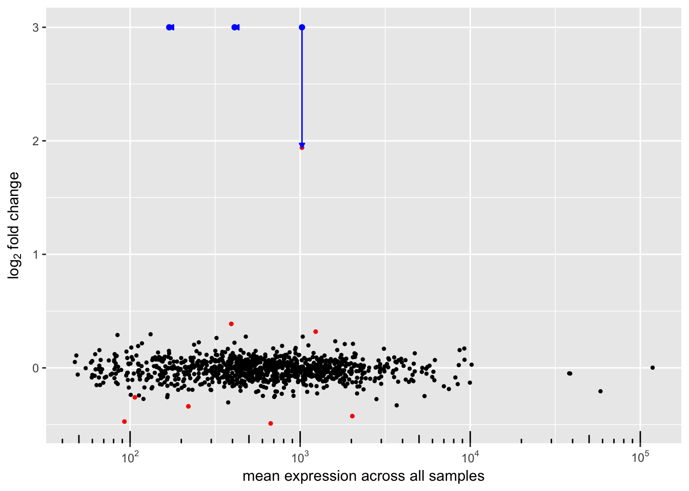
The blue arrows indicate how foldchange is affected by this new feature.
As well, it can plot the original MA plot:
plotMA(degs[[1]], diff = 2, limit = 3, raw = TRUE)
or the correlation between the original log2FoldChange and the new ones:
plotMA(degs[[1]], limit = 3, correlation = TRUE)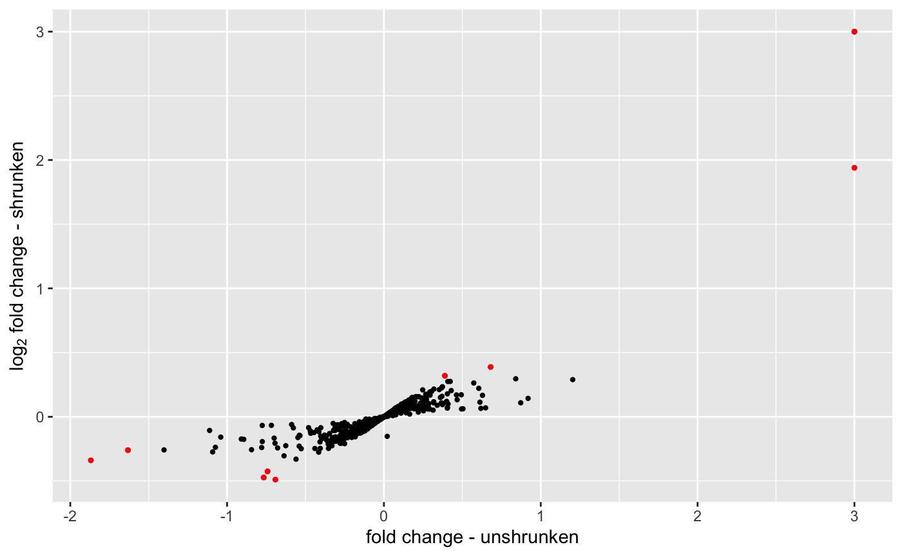
Volcano plots
Volcano plot using the output of DESeq2. It mainly needs data.frame with two columns (logFC and pVal). Specific genes can be plot using the option plot\_text (subset of the previous data.frame with a 3rd column to be used to plot the gene name).
res[["id"]] <- row.names(res)
show <- as.data.frame(res[1:10, c("log2FoldChange", "padj", "id")])
degVolcano(res[,c("log2FoldChange", "padj")], plot_text = show)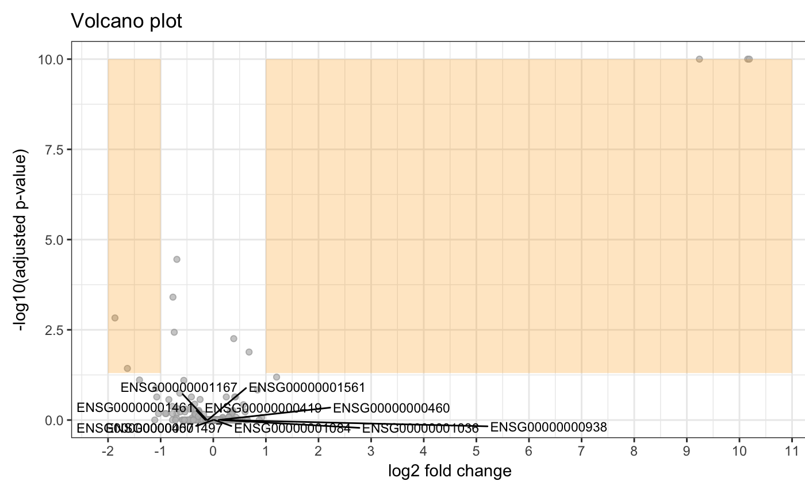
Note that the function is compatible with DEGset. Using degVolcano(degs[[1]]) is valid.
Gene plots
Plot top genes coloring by group. Very useful for experiments with nested groups. xs can be time or WT/KO, and group can be treated/untreated. Another classification can be added, like batch that will plot points with different shapes.
degPlot(dds = dds, res = res, n = 6, xs = "group")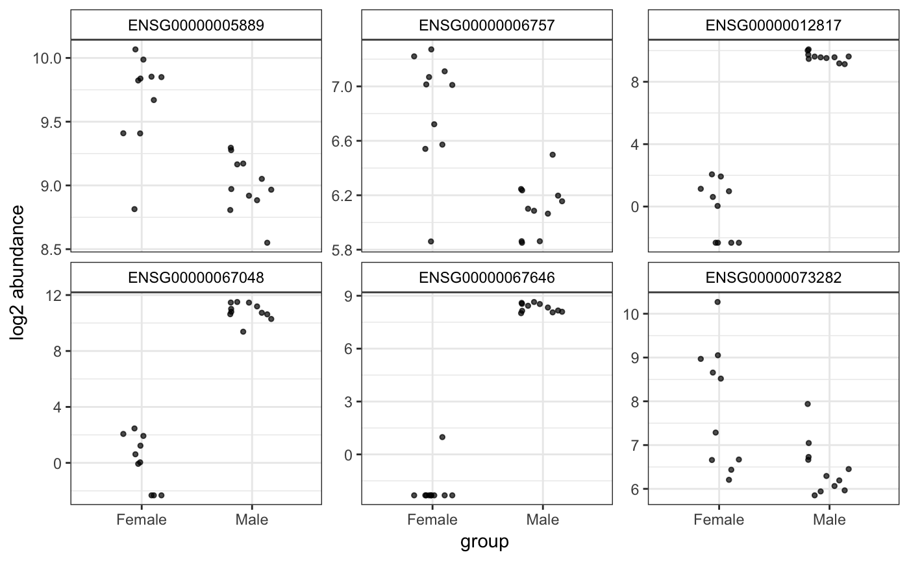
Another option for plotting genes in a wide format:
degPlotWide(dds, rownames(dds)[1:5], group="group")
Markers plots
Markers can be used to show whether different conditions are enriched in different markers. For instance, in this example, Females and Males show different total expression for chromosome X/Y markers
data(geneInfo)
degSignature(humanGender, geneInfo, group = "group")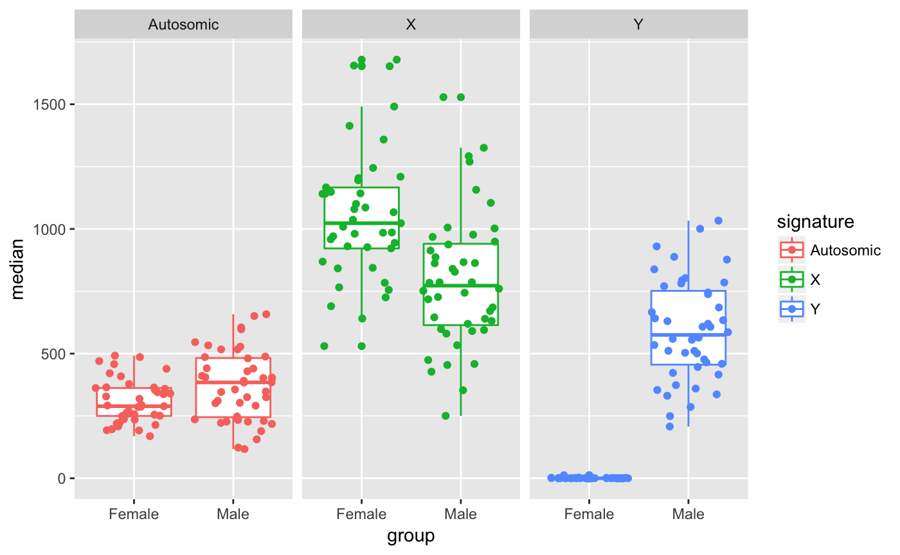
Full report
If you have a DESeq2 object, you can use degResults to create a full report with markdown code inserted, including figures and table with top de-regulated genes, GO enrichment analysis and heatmaps and PCA plots. If you set , different files will be saved there.
resreport <- degResults(dds = dds, name = "test", org = NULL,
do_go = FALSE, group = "group", xs = "group",
path_results = NULL)## ## Comparison: test {.tabset}
##
##
## NULL
##
##
## Differential expression file at: test_de.csv
##
## Normalized counts matrix file at: test_log2_counts.csv
##
## ### MA plot plot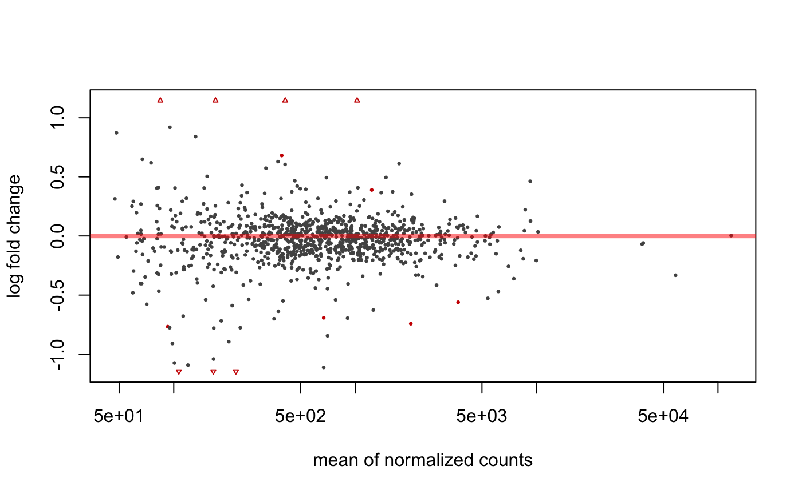
##
##
## ### Volcano plot
##
##
##
## ### QC for DE genes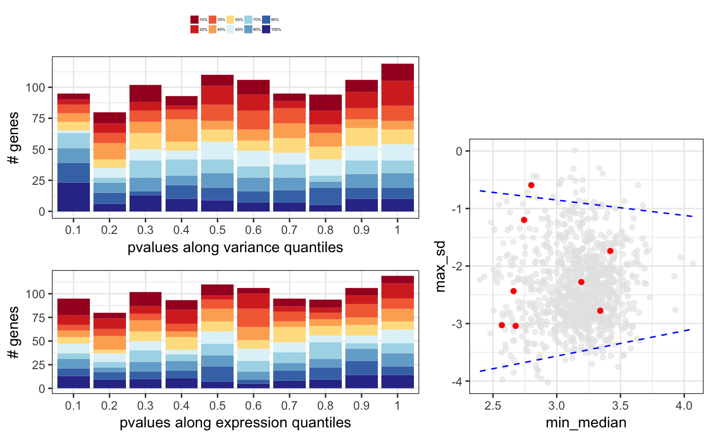
##
##
## ### Most significants, FDR< 0.05 and log2FC > 0.1 : 10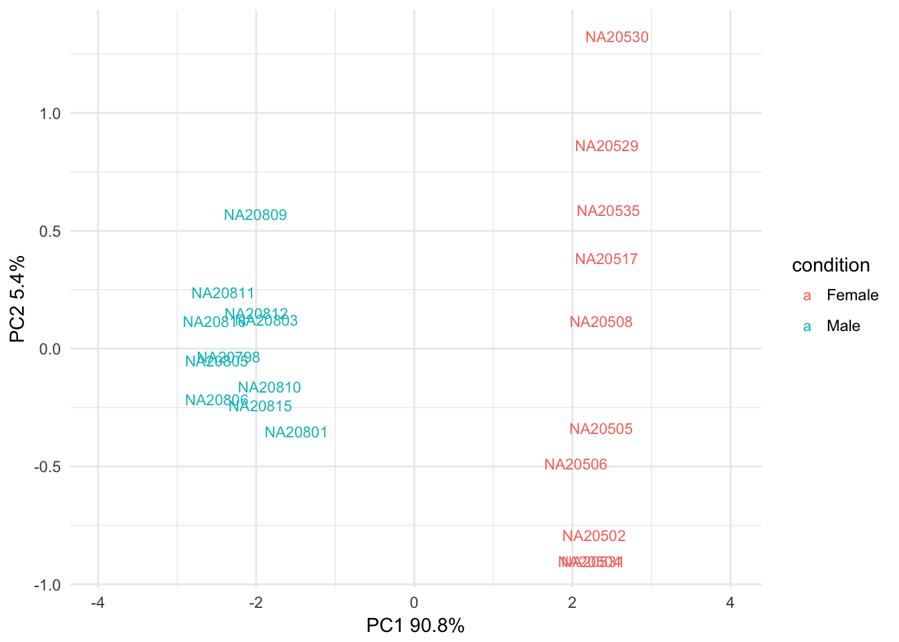
##
##
##
## ### Plots top 9 most significants
##
##
##
## ### Top DE table
##
##
##
## baseMean log2FoldChange lfcSE stat pvalue padj absMaxLog2FC
## ---------------- ----------- --------------- ---------- ---------- ---------- ---------- -------------
## ENSG00000067048 1025.03783 10.1571705 0.4233146 23.994380 0.0000000 0.0000000 10.1571705
## ENSG00000012817 411.54387 9.2394007 0.4237379 21.804517 0.0000000 0.0000000 9.2394007
## ENSG00000067646 169.81477 10.1874916 0.6579432 15.483847 0.0000000 0.0000000 10.1874916
## ENSG00000005889 670.86191 -0.6919265 0.1314523 -5.263708 0.0000001 0.0000353 0.6919265
## ENSG00000006757 92.66111 -0.7666012 0.1611520 -4.757006 0.0000020 0.0003930 0.7666012
## ENSG00000073282 220.15603 -1.8685615 0.4206120 -4.442482 0.0000089 0.0014821 1.8685615
## ENSG00000005302 2026.54990 -0.7418952 0.1763412 -4.207157 0.0000259 0.0036943 0.7418952
## ENSG00000005020 1233.86316 0.3888370 0.0952312 4.083085 0.0000444 0.0055552 0.3888370
## ENSG00000003400 393.62677 0.6803243 0.1766475 3.851310 0.0001175 0.0130542 0.6803243
## ENSG00000069702 106.67010 -1.6323189 0.4585611 -3.559654 0.0003713 0.0371343 1.6323189
## ENSG00000010278 84.30823 1.2035871 0.3554857 3.385754 0.0007098 0.0645300 1.2035871
## ENSG00000023171 165.31692 -1.4022259 0.4236024 -3.310240 0.0009322 0.0776799 1.4022259
## ENSG00000072501 3694.76013 -0.5604815 0.1707989 -3.281529 0.0010325 0.0794200 0.5604815
## ENSG00000070018 119.89049 -1.0921227 0.3512409 -3.109327 0.0018751 0.1339388 1.0921227
## ENSG00000059377 131.98111 0.8405094 0.2744635 3.062372 0.0021959 0.1463935 0.8405094
## ENSG00000008277 377.43955 -0.6368732 0.2136506 -2.980910 0.0028739 0.1796208 0.6368732
## ENSG00000005059 479.12528 0.4225402 0.1492246 2.831571 0.0046320 0.2289281 0.4225402
## ENSG00000012963 1829.21224 0.2471040 0.0861859 2.867104 0.0041425 0.2289281 0.2471040
## ENSG00000038427 100.87217 -1.0743654 0.3810269 -2.819658 0.0048075 0.2289281 1.0743654
## ENSG00000068079 1035.17996 0.4075632 0.1415563 2.879160 0.0039874 0.2289281 0.4075632Detect patterns of expression
In this section, we show how to detect pattern of expression. Mainly useful when data is a time course experiment. degPatterns needs a expression matrix, the design experiment and the column used to group samples.
ma = assay(rlog(dds))[row.names(res)[1:100],]
res <- degPatterns(ma, design, time = "group")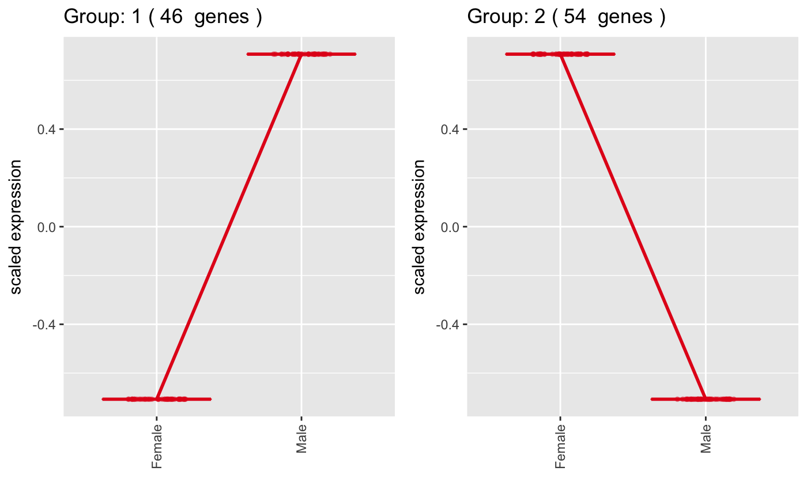
Useful functions
This section shows some useful functions during DEG analysis.
degFilter helps to filter genes with a minimum read count by group.
cat("gene in original count matrix: 1000")gene in original count matrix: 1000
filter_count <- degFilter(counts(dds),
design, "group",
min=1, minreads = 50)
cat("gene in final count matrix", nrow(filter_count))gene in final count matrix 940
Session info
sessionInfo()## R version 3.4.3 (2017-11-30)
## Platform: x86_64-apple-darwin15.6.0 (64-bit)
## Running under: macOS High Sierra 10.13.3
##
## Matrix products: default
## BLAS: /Library/Frameworks/R.framework/Versions/3.4/Resources/lib/libRblas.0.dylib
## LAPACK: /Library/Frameworks/R.framework/Versions/3.4/Resources/lib/libRlapack.dylib
##
## locale:
## [1] en_US.UTF-8/en_US.UTF-8/en_US.UTF-8/C/en_US.UTF-8/en_US.UTF-8
##
## attached base packages:
## [1] parallel stats4 stats graphics grDevices utils datasets
## [8] methods base
##
## other attached packages:
## [1] bindrcpp_0.2.0.9000 DESeq2_1.19.38
## [3] SummarizedExperiment_1.8.1 DelayedArray_0.4.1
## [5] matrixStats_0.52.2 Biobase_2.38.0
## [7] GenomicRanges_1.30.2 GenomeInfoDb_1.14.0
## [9] IRanges_2.12.0 S4Vectors_0.16.0
## [11] BiocGenerics_0.24.0 DEGreport_1.15.3
## [13] quantreg_5.35 SparseM_1.77
## [15] BiocStyle_2.5.41
##
## loaded via a namespace (and not attached):
## [1] nlme_3.1-131 bitops_1.0-6
## [3] bit64_0.9-7 RColorBrewer_1.1-2
## [5] rprojroot_1.2 tools_3.4.3
## [7] backports_1.1.2 utf8_1.1.3
## [9] R6_2.2.2 rpart_4.1-11
## [11] Hmisc_4.1-1 DBI_0.7
## [13] lazyeval_0.2.1 colorspace_1.3-2
## [15] nnet_7.3-12 GetoptLong_0.1.6
## [17] mnormt_1.5-5 tidyselect_0.2.3
## [19] gridExtra_2.3 bit_1.1-12
## [21] Nozzle.R1_1.1-1 compiler_3.4.3
## [23] cli_1.0.0 htmlTable_1.11.2
## [25] logging_0.7-103 labeling_0.3
## [27] scales_0.5.0 checkmate_1.8.5
## [29] psych_1.7.8 genefilter_1.60.0
## [31] stringr_1.3.0 digest_0.6.13
## [33] foreign_0.8-69 rmarkdown_1.6.0.9008
## [35] XVector_0.18.0 pkgconfig_2.0.1
## [37] base64enc_0.1-3 htmltools_0.3.6
## [39] highr_0.6 limma_3.34.9
## [41] htmlwidgets_1.0 rlang_0.2.0.9000
## [43] GlobalOptions_0.0.12 rstudioapi_0.7
## [45] RSQLite_2.0 bindr_0.1.0.9000
## [47] shape_1.4.4 BiocParallel_1.12.0
## [49] acepack_1.4.1 dplyr_0.7.4.9000
## [51] RCurl_1.95-4.8 magrittr_1.5
## [53] GenomeInfoDbData_0.99.1 Formula_1.2-2
## [55] Matrix_1.2-12 Rcpp_0.12.15
## [57] munsell_0.4.3 stringi_1.1.6
## [59] yaml_2.1.16 edgeR_3.20.8
## [61] zlibbioc_1.24.0 plyr_1.8.4
## [63] grid_3.4.3 blob_1.1.0
## [65] ggrepel_0.7.0 crayon_1.3.4
## [67] lattice_0.20-35 cowplot_0.9.2
## [69] splines_3.4.3 annotate_1.56.0
## [71] circlize_0.4.3 locfit_1.5-9.1
## [73] knitr_1.20 ComplexHeatmap_1.17.1
## [75] pillar_1.1.0 rjson_0.2.15
## [77] codetools_0.2-15 geneplotter_1.56.0
## [79] glue_1.2.0 XML_3.98-1.9
## [81] evaluate_0.10.1 latticeExtra_0.6-28
## [83] data.table_1.10.4-3 MatrixModels_0.4-1
## [85] tidyr_0.8.0 purrr_0.2.4
## [87] gtable_0.2.0 reshape_0.8.7
## [89] assertthat_0.2.0 ggplot2_2.2.1
## [91] xtable_1.8-2 ConsensusClusterPlus_1.42.0
## [93] survival_2.41-3 tibble_1.4.2
## [95] AnnotationDbi_1.40.0 memoise_1.1.0
## [97] cluster_2.0.6